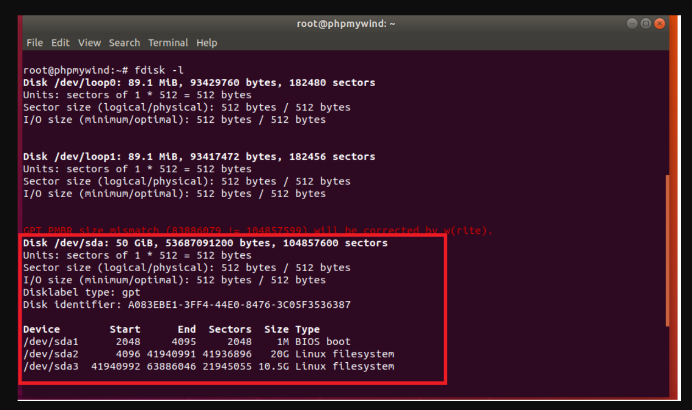
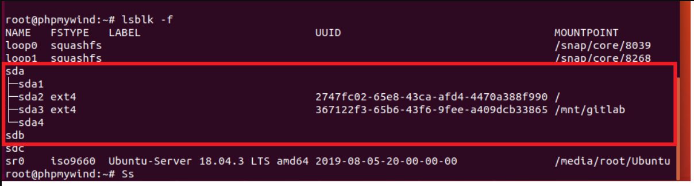
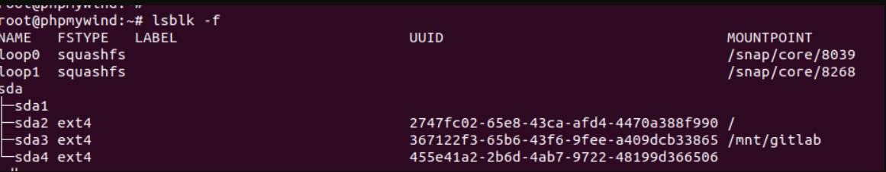
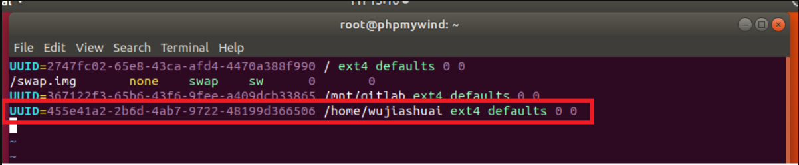
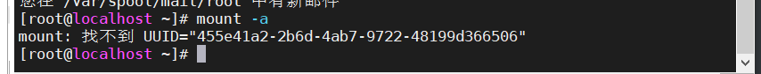
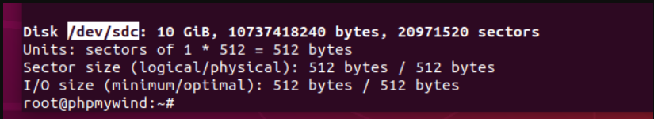

磁盘扩展
查看磁盘fdisk -l，可以下图中

可以看出，在/dev/sda这块磁盘中，存在三块分区，sda1,sda2,sda3.而sda这块磁盘中还存在一部分磁盘空间没有进行分区，那么现在就开始对sda剩下的磁盘空间进行分区
划分磁盘分区
使用命令fdisk /dev/sda
root@phpmywind:~# fdisk /dev/sda # 进入该磁盘，准备分区
Welcome to fdisk (util-linux 2.31.1).
Changes will remain in memory only, until you decide to write them.
Be careful before using the write command.
GPT PMBR size mismatch (83886079 != 104857599) will be corrected by w(rite).
GPT PMBR size mismatch (83886079 != 104857599) will be corrected by w(rite).
Command (m for help): n # 选择n选项，代表进行风区
Partition number (4-128, default 4): 4 # 分区号，和前面的sda1、sda2、sda3一样
First sector (63886047-104857566, default 63887360): 63887360 # sda3这块分区开始的块地址
Last sector, +sectors or +size{K,M,G,T,P} (63887360-104857566, default 104857566):#sda3块结束地址
Created a new partition 4 of type 'Linux filesystem' and of size 19.5 GiB.
Command (m for help): w # 代表将前面的操作都写入执行，然后退出。
GPT PMBR size mismatch (83886079 != 104857599) will be corrected by w(rite).
The partition table has been altered.
Syncing disks.
root@phpmywind:~#
查看分区出来的结果 
发现sda4已经分离出来了，但是没有部署文件系统。
设置文件系统
使用命令mkfs.ext4 磁盘分区，等待几秒即可，如果磁盘分区比较大，那么花费的时间也就会比较长。
root@phpmywind:~# mkfs.ext4 /dev/sda4
mke2fs 1.44.1 (24-Mar-2018)
Creating filesystem with 5121275 4k blocks and 1281120 inodes
Filesystem UUID: 455e41a2-2b6d-4ab7-9722-48199d366506
Superblock backups stored on blocks:
32768, 98304, 163840, 229376, 294912, 819200, 884736, 1605632, 2654208,
4096000
Allocating group tables: done
Writing inode tables: done
Creating journal (32768 blocks):
done
Writing superblocks and filesystem accounting information: done
root@phpmywind:~#
分好后，查看，发现已经设置成功 
挂载目录
将磁盘分区挂载到响应的目录下
手动挂载
即每次开机不能自动挂载都要手动挂载
mount -t ext4 -o rw /dev/sdb4 /home/wujiashuai
就是这行命令，解释一下就是将/dev/sdb4挂载到/home/wujiashuai下
自动挂载
即每次开机后能够自动挂载，即修改/etc/fstab这个文件
首先获取对应的磁盘分区的uuid，注意这里是查看/dev目录下。
root@phpmywind:~# blkid /dev/sda4
/dev/sda4: UUID="455e41a2-2b6d-4ab7-9722-48199d366506" TYPE="ext4" PARTUUID="7f6f1703-7eb3-7348-adb0-56c5c2a5548b"
修改/etc/fstab文件，将一行语句写入

第一个0的意思，不要进行dump备份
第二个0的意思，不要进行磁盘检查
结束编辑后，使用mount -a进行刷新即可。
这里既是刷新，也是检查配置文件有没有写错。如果写错则会进行报错

一定要没有错了，才可以。不然关机后，会启动不了，最后只能修改启动界面，才能修改回来。
磁盘挂载
磁盘挂载与磁盘扩展基本上是一样的
下面对/dev/sdc进行磁盘挂载

磁盘分区
root@phpmywind:~# fdisk /dev/sdc
Welcome to fdisk (util-linux 2.31.1).
Changes will remain in memory only, until you decide to write them.
Be careful before using the write command.
Device does not contain a recognized partition table.
Created a new DOS disklabel with disk identifier 0xe8c8ae93.
Command (m for help): n
Partition type
p primary (0 primary, 0 extended, 4 free)
e extended (container for logical partitions)
Select (default p):
Using default response p.
Partition number (1-4, default 1):
First sector (2048-20971519, default 2048):
Last sector, +sectors or +size{K,M,G,T,P} (2048-20971519, default 20971519):
Created a new partition 1 of type 'Linux' and of size 10 GiB.
磁盘系统设置
root@phpmywind:~# mkfs.ext4 /dev/sdc1
mke2fs 1.44.1 (24-Mar-2018)
Creating filesystem with 2621184 4k blocks and 655360 inodes
Filesystem UUID: fd5f67fa-021f-42c2-ba0f-cfddbeeebff5
Superblock backups stored on blocks:
32768, 98304, 163840, 229376, 294912, 819200, 884736, 1605632
Allocating group tables: done
Writing inode tables: done
Creating journal (16384 blocks): done
Writing superblocks and filesystem accounting information: done
root@phpmywind:~#
挂载磁盘,并且检查磁盘挂载情况
root@phpmywind:~# mount -t ext4 -o rw /dev/sdc1 /home/mounttest
root@phpmywind:~# lsblk -f
NAME FSTYPE LABEL UUID MOUNTPOINT
loop0 squashfs /snap/core/8039
loop1 squashfs /snap/core/8268
sda
├─sda1
├─sda2 ext4 2747fc02-65e8-43ca-afd4-4470a388f990 /
├─sda3 ext4 367122f3-65b6-43f6-9fee-a409dcb33865 /mnt/gitlab
└─sda4 ext4 455e41a2-2b6d-4ab7-9722-48199d366506
sdb
sdc
└─sdc1 ext4 fd5f67fa-021f-42c2-ba0f-cfddbeeebff5 /home/mounttest
sr0 iso9660 Ubuntu-Server 18.04.3 LTS amd64 2019-08-05-20-00-00-00 /media/root/Ubuntu
root@phpmywind:~#